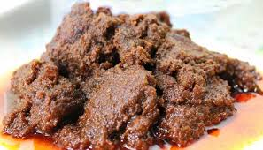
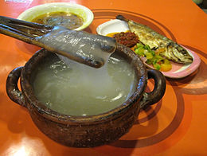
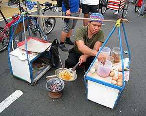

RENDANG
adalah masakan daging dengan bumbu rempah-rempah yang berasal dari Minangkabau. Masakan ini dihasilkan dari proses memasak yang dipanaskan berulang-ulang menggunakan santan sampai kuahnya kering sama sekali.

gudeg
adalah makanan khas Yogyakarta dan Jawa Tengah yang terbuat dari nangka muda yang dimasak dengan santan.

lunpia
lunpia adalah makanan yang berasal dari semarang semacam rollade yang berisi rebung, telur, dan daging ayam atau udang.

papeda
makanan berupa bubur sagu khas Maluku dan Papua yang biasanya disajikan dengan ikan tongkol atau mubara yang dibumbui dengan kunyit.[1] Papeda berwarna putih dan bertekstur lengket menyerupai lem dengan rasa yang tawar.

kerak telor
makanan asli daerah Jakarta (Betawi), dengan bahan-bahan beras ketan putih, telur ayam, ebi (udang kering yang diasinkan) yang disangrai kering ditambah bawang merah goreng, lalu diberi bumbu yang dihaluskan berupa kelapa sangrai, cabai merah, kencur, jahe, merica butiran, garam dan gula pasir.

kerak telor